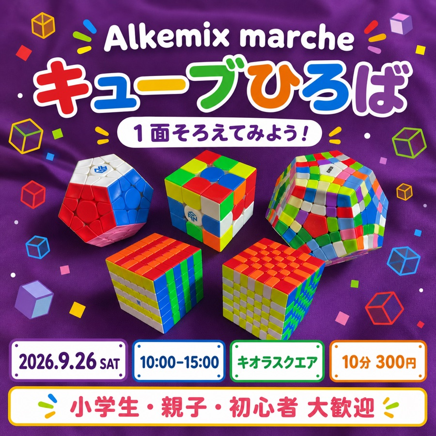

PROJECT 04 / COMMUNITY
キューブ
ひろば
初めて触る人も、親子も、経験者も。キューブの面白さをその場で体験し、好きな人同士がつながるための小さなひろばです。
CUBE HIROBA1面そろえて
みよう！初心者・親子・経験者 大歓迎
みよう！初心者・親子・経験者 大歓迎
WHY
キューブの世界を広げ、
好きな人をつなげたい。
スピードキューブの面白さを、もっといろいろな人に知ってもらいたい。そして、すでにキューブができる人たち同士が出会える場所を作りたい。そんな思いから始めた体験イベントです。
完成させることだけが目的ではありません。触ってみる、1面だけ揃える、タイムを測る、知らなかったパズルを見る。一人ひとりに合った入口を用意します。
TRACK RECORD
まずは小さく始めて、
4回の教室へ。
2025年6月から、広島県内の子育てカフェで4回のキューブ教室を開催しました。企画、準備、当日の講座までを担当し、1回あたり最大10人前後の親子に参加してもらいました。
初心者にはできるだけ平易な言葉を使い、経験者には会話から経験の深さを見極めて説明を変えます。同じキューブでも、一人ひとりに合った楽しみ方を見つけることを大切にしています。
「教え方が上手」「こんなキューブもあるんだ」と言ってもらえた。
EVENT MATERIALS
イベントの入口を、
POPからつくる。
マルシェに向けて制作した告知POPを、イベント制作物として公開します。会場で足を止めてもらえること、初めての人にも内容がひと目で伝わることを意識して、情報とキューブの楽しさを一枚にまとめました。
サイトでは、印刷物をそのまま並べるのではなく、制作の意図と一緒に紹介します。色、写真、文字の役割まで含めて、キューブひろばの「来てみたい」をつくるデザインです。

01 / EVENT VISUAL
見つける、知る、
やってみる。
キューブの種類や色の楽しさを前面に出しながら、日程・場所・体験料を迷わず読めるように整理しました。親子や初心者が、気軽に声をかけられる入口になることを目指したPOPです。
- EVENT
- Alkemix marche
- DATE
- 2026.09.26 SAT
- PLACE
- キオラスクエア
- TRIAL
- 10分 300円
NEXT EVENT
Alkemix marche
キューブひろば
次回は2026年9月26日（土）、三原市キオラスクエアの「Alkemix marche」に出店予定です。初めての1面体験を中心に、キューブに触れる入口を用意します。
キオラスクエアAlkemix marche 会場内
DISCOVERY
教えたときの迷いを、
次の説明へ戻す。
開催して特に印象に残ったのは、小学生の吸収の速さでした。見たこと、聞いたことをすぐ自分の手の動きに変えていく姿から、伝える順番や言葉の選び方をこちらも学んでいます。
説明しづらかった箇所や、参加者が迷った言葉は、Webマニュアル「キューブ王国」の見直しにも反映しています。人に教えることと、分かる資料を作ることは、別々ではなく一つの活動です。
今後は、キューブ好きが集まる交流会や、学生を対象とした教室にも広げていきたいと考えています。